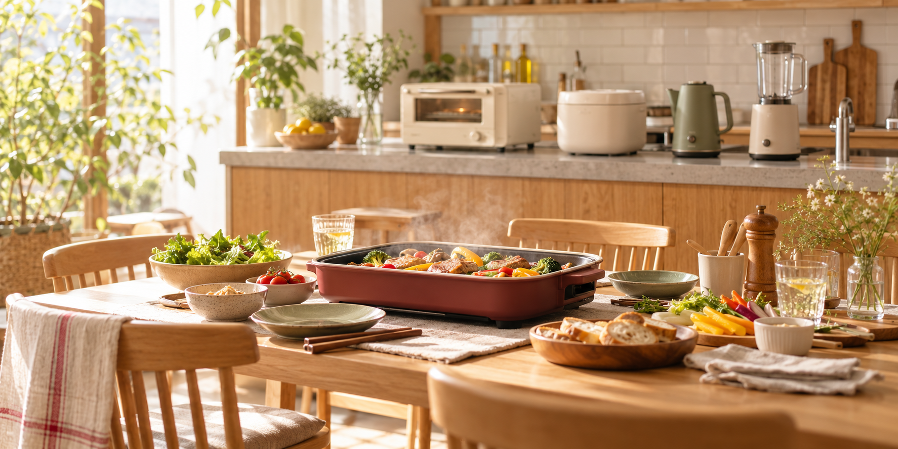

ホットプレート・卓上調理
週末ごはん、たこ焼き、鍋、焼き物など、家族で囲む食卓に使いやすい家電を見ます。
- 家族の人数に合うサイズ
- プレートの洗いやすさ
- 収納場所
KITCHEN APPLIANCE / PR
PR｜A8.netのアフィリエイト広告を含みます
ホットプレート、調理家電、時短家電。見た目だけでなく、人数・置き場所・洗いやすさまで考えると、家で使い続けやすいものを選びやすくなります。

写真はイメージです。掲載商品そのものではありません。
掲載リンクにはA8.netのアフィリエイト広告を含みます。掲載商品は未使用です。公式情報とA8.net管理画面の情報をもとにした紹介で、体験レビューではありません。価格、在庫、保証、キャンペーンは購入前に販売元で確認してください。
START HERE
週末ごはん、たこ焼き、鍋、焼き物など、家族で囲む食卓に使いやすい家電を見ます。
毎日の料理を少しラクにしたい時は、使う頻度と出しっぱなしにできるかを先に見ます。
キッチン家電はギフトにも選びやすい反面、相手の置き場所や色の好みも大事です。
MAIN PICK
BRUNO onlineは、ホットプレートなどのキッチン用品や、暮らし雑貨をまとめて見られる公式オンラインストアです。家族で囲む食卓、ギフト、新生活の家電を探す時に見やすい候補です。
ANOTHER PICK
シャークニンジャは、掃除機だけでなくキッチン家電・空調家電まで展開している公式ストアです。調理家電を見る場合は、普段の料理に本当に使うか、洗う部品が多すぎないかを確認します。
CHECK POINT
出しっぱなしにできるか、棚にしまえるかで使う頻度が変わります。
プレートや部品の洗いやすさは、使い続けるうえでかなり大事です。
サイズが小さいと何度も焼くことになり、大きすぎると収納が重くなります。